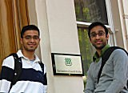
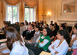
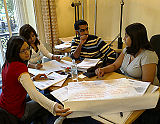
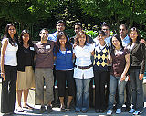
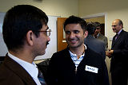
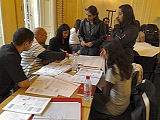

News Archive, 2007
| IIS Launches Secondary Teacher Education Programme October 2007 The Institute’s Department of Graduate Studies welcomed its first cohort of students to the newly established Secondary Teacher Education Programme (STEP) this month. The STEP is a large-scale initiative involving The Institute of Ismaili Studies, the Institute of Education (IOE) at the University of London, and the Ismaili Tariqah and Religious Education Boards (ITREBs) of five participating countries. |
The STEP aims to develop an international community of qualified religious education teachers who will deliver the Institute’s secondary curriculum throughout the worldwide Ismaili Muslim community. The programme is being piloted in six regions: Toronto and Vancouver, Canada; Mumbai, India; Karachi, Pakistan; Khorog, Tajikistan; and Houston, USA. The current pilot will run for two cycles: 2007-2009 and 2008-2010. Students from the first cohort, who will graduate in 2009, have already begun their studies. This programme is a collaborative endeavour between the IIS and the IOE, building upon a history of joint programmes spanning over 20 years. The students will complete a two-year course of study that culminates in two masters degrees awarded by the University of London: a Master of Teaching (MTeach) and a Master of Arts in Education (Muslim Societies and Civilizations). Following the two-year programme, participants will become secondary classroom teachers, employed by national ITREBs, to implement the secondary curriculum.
The breakdown of students in the first cohort by country is as follows: 12 from Canada, 6 from India, 7 from Pakistan, 6 from Tajikistan, and 10 from the USA. This year’s STEP cohort comprises a range of individuals with diverse academic backgrounds. Reshma Panjwani, from Hyderabad, India entered the STEP with a master’s degree in Hospital Management. “I’m not a professional teacher,” she comments, “and my field of study is completely different. However, this programme provides me with a career and also affords methe privilege to serve the [Ismaili] Imamat institutions.” Shamsah Ebrahim, an American student with a PhD in Biochemistry, explains her decision to pursue a career as a religious education teacher: “I believe that true success - not only material plenty, but also emotional contentment - requires excellence of intellect to be balanced with inner strength, faith in a larger purpose, belief in the worth of every individual, and a developed conscience. If this is true, then to be successful and confident members of tomorrow’s world, students will need a spiritual and cultural education in conjunction with their secular studies. I wish to be part of that effort.” Eraj Sodetsairov, a participant from Khorog, Tajikistan, concurs. For him, the most important aspect of this programme is its originality: “The reason why I chose the STEP over other career options is its focus on education, both in the religious and secular dimensions of human life. It is a unique programme.” STEP students take courses from both the MTeach and MA degrees simultaneously over the course of two years. The academic terms are interspersed with practicum experiences that take place at Ismaili religious education centres and secular schools in London as well as at RECs in the pilot cities. The programme includes field visits to Cairo, Egypt and Cordova, Spain to explore two of the great cities of Muslim civilizations. Throughout the programme, participants are expected to reflect upon and to create and improve methods to make the richness and complexity of Muslim civilizations understandable to young people. The second pilot, to be rolled-out in the same five countries, begins in September 2008. Deadline for submission of applications is 31 October 2007. |

 Gateways
Gateways